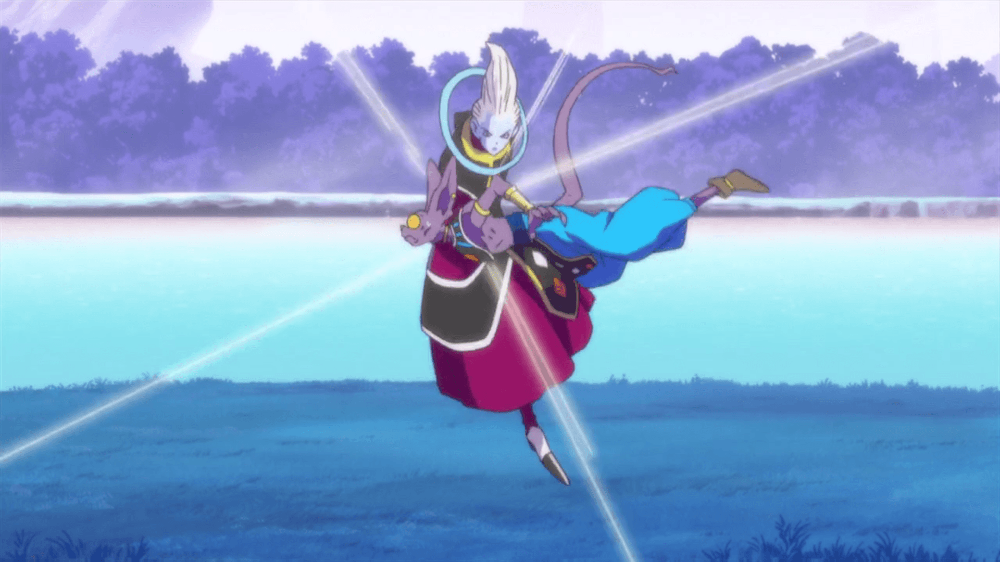
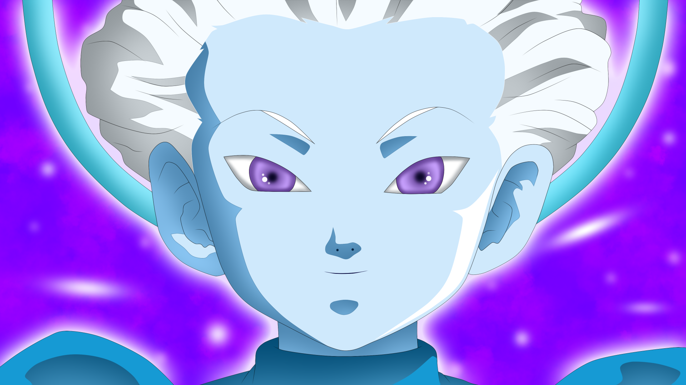

Why angels don't fight?
Dragon Ball Super: Why Whis & the Other Angels Never Fight
As one of the most powerful beings in Dragon Ball Super, Whis could solve any and every problem our heroes ever encounter -- so why doesn't he?
Whis and his fellow Angels are some of the most peculiar beings in Dragon Ball Super. Despite serving as attendants to Gods of Destruction, they are vastly more powerful. Goku and Vegeta's outrageous leaps in strength during Super are largely thanks to their training under Whis.
The Angel of Universe Seven, Whis is capable of knocking out Lord Beerus with a single chop, resurrecting the dead, and even rewinding time itself. However, he is prohibited from fighting in or interfering with any of the conflicts that constantly plague his universe. Here's why Angels cannot get involved in even the most consequential battles.
The Angels of Dragon Ball Super serve as mentors for Gods of Destruction, teaching them to control the power of Destruction. They are also attendants meant to provide their assigned Destroyer with anything else they may need. Angels such as Whis may take no action unless directly instructed by their universe's God of Destruction. The latter are most likely given free rein to do as they please because they are nowhere near as powerful as Angels.
That said, Angels are not strictly beholden to their God of Destruction. They must follow the command of the Grand Priest, the father of all Angels as well as the most powerful. To Goku's shock, he learns even Whis' power is nothing compared to that of the Grand Priest. The mighty leader is pretty hands-off when it comes to his Angels, so long as they follow his one and only law: act impartially in all matters pertaining to their universe.
Whis seldom displays concern or even interest in anything other than food. While he trains Goku and Vegeta, he is not overly invested in their lives, willing to leave them to their deaths in order to adhere to Angel Law. It's hard to blame Whis for his staunch devotion, as any Angel who violates it is immediately, and without question, expunged from existence by the Grand Priest -- even if he is not physically present.
Interestingly, when Whis rewound time to restore the Earth and give Goku another crack at defeating Frieza, he was not punished for interfering. Considering Whis only restored Earth to continue enjoying its food, he appears to have found a loophole in the Grand Priest's law by acting in his own self-interest, rather than supporting one side over the other.
Angels also seem exempt from Angel Law if they are acting on the orders of their God of Destruction. At Beerus' command, Whis once rescued Goku and the rest of the Z-Fighters after they had been soundly and violently defeated by Moro. After doing so, Whis was content to leave the dying fighters to their fate before spotting his fellow Angel, Merus, taking on Moro in battle.
Source: cbr.com
Back to news